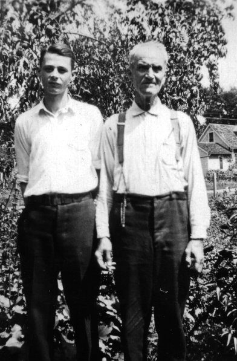

Wood Working Gallery

This is a collection of my woodworking projects.
I began in 2000 trying to make furniture. Before that I had tried in many crude ways to fashion useful objects for around the house. Since my daughter’s birth in 1984, I had made Kate a musicbox for every year up to 18. Some were treasures, some simply endowed with my love to suffice for skill.
I had done a lot of renovation/rough carpentry, redoing the kitchen, bathrooms, adding a deck and screened porch in Ames; but not fine woodworking like furniture. My Dad always told me if I wanted to be woodworker, I needed a wood burning fireplace. How true! But I also realized that my love of wood and furniture harkened back to my father’s grandfather (on his mother’s side), a carpenter. Today, as I pick over wood, draw up plans, modify the plans during the construction, and pocket lessons learned, I sense that I am honoring a long legacy that runs through my family.


As I put this together I realized that perhaps I have periods, like artists have their blue period, their red period. I seem to have had an oak (quarter-sawn white) and a cherry period. We’ll see what’s next.
When I am in the shop, it sometimes feels like Dad in the plant.